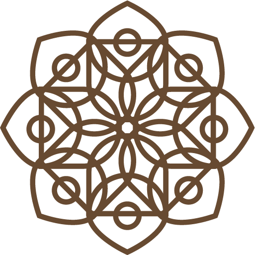

<ion-header [translucent]="true">
  <ion-toolbar color="primary">
    <ion-buttons slot="start">
      <ion-menu-button color="dark"></ion-menu-button>
    </ion-buttons>
    <ion-title>
      <div class="holder">
        
        <h2 *ngIf="sure != null"> {{ sure }} </h2>
        <h4 *ngIf="dua != null"> {{ dua }} </h4>
        

        <ion-icon *ngIf="mp3 != null" (click)="playAudio()" class="oku-icon" name="caret-forward-circle-outline">
        </ion-icon>
      </div>
    </ion-title>
  </ion-toolbar>
</ion-header>

<ion-content [fullscreen]="true">
  <audio class="kuranokur" autoplay="autoplay">
    <source [src]="mp3" type="audio/mpeg">
  </audio>

  <div id="container">

    <div id="arapca" class="arapca">
      <h2>ARAPÇA</h2>
      <div class="text">
        {{arabca}}
      </div>
    </div>

    <div id="meal" class="meal">
      <h2>MEAL</h2>
      <div class="text">
        {{meal}}
      </div>
    </div>


  </div>
</ion-content>